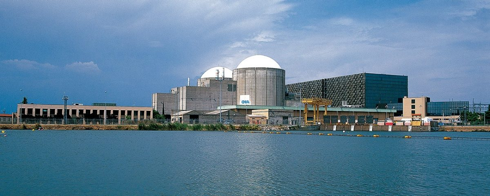

¿Cómo Funciona Una Planta De Energía Nuclear?
El funcionamiento de una central nuclear se basa en el aprovechamiento del calor para mover una turbina por la acción del vapor de agua, la cual está conectada a un generador eléctrico. Para conseguir el vapor de agua se utiliza como combustible el uranio o el plutonio. El proceso se puede simplificar en cinco fases:
Los residuos generados por la fisión del uranio son almacenados dentro de la propia central, en unas piscinas de hormigón especiales para materiales radioactivos.
Reactores nucleares de fisión
Un reactor nuclear de fisión es una instalación capaz de iniciar, mantener y controlar las reacciones de fisión en cadena, disponiendo de los medios adecuados para extraer el calor generado. Sus elementos principales son:
Combustible. Formado por un material fisionable, generalmente compuesto de uranio en el que tienen lugar las reacciones de fisión. Es la fuente de generación de calor.
Moderador. Hace disminuir la velocidad de los neutrones rápidos generados en la fisión, manteniendo la reacción. Se acostumbra a utilizar agua, agua pesada, helio, grafito o sodio metálico.
Elementos de control. Permiten controlar en todo momento la población de neutrones y mantener estable el reactor.
Refrigerante. Extrae el calor generado por el combustible. Generalmente se utilizan refrigerantes líquidos como el agua ligera, el agua pesada o gases como el anhídrido carbónico y el helio.
Blindaje. Evita que les radiaciones y los neutrones del reactor se escapen al exterior. Por lo general, se utiliza hormigón, acero o plomo.
Elementos de seguridad. Todas las centrales nucleares de fisión disponen de múltiples sistemas de seguridad para evitar que se libere radioactividad al exterior.